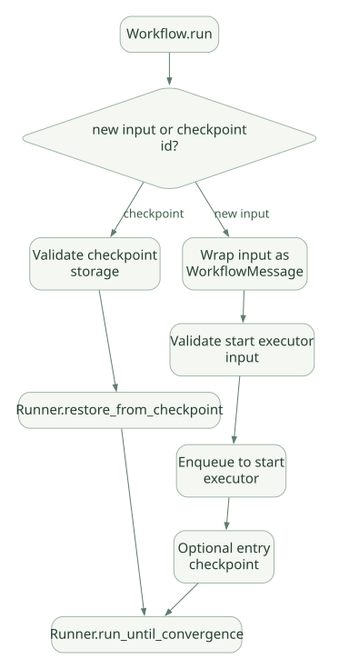

SECOND STUDY / 복구와 협업 모델
복구와 협업 모델
이번 단원의 읽는 관점
Checkpoint 리니지·Entry 저장과 Graph·실험적 Functional 표현을 연결합니다.
살펴볼 경계순서 보장 범위와 재개 경계, 부모·자식 세션 및 승인 상태 전달을 구분하세요.
이 페이지의 세부 목차
19. Checkpoint와 Resume: 직렬화보다 중요한 것은 경계#
19.1 무엇이 저장되는가?#
고정 코드 WorkflowCheckpoint는 workflow_name, graph_signature_hash, 고유 checkpoint ID, 이전 Checkpoint ID, timestamp, 메시지, committed workflow state, pending request 정보, iteration count 등 복구에 필요한 구조를 갖는다. State에는 Executor·Edge Runner 관련 예약 영역이 포함될 수 있다. [S10]
| 필드/영역 | 의미 | 왜 필요한가? |
|---|---|---|
| Workflow Name / Graph Signature | 복구 대상 그래프 식별·호환성 | 다른 그래프에 잘못 복원 방지 |
| Checkpoint ID | 저장 지점 식별 | 조회·재개 |
| Previous ID | Checkpoint 리니지 | 순서·분기 추적 |
| Committed State | Executor·Edge 전달 상태 | 단계 복원 |
| Messages | Executor 사이 미처리/교환 메시지 | 작업 유실 방지 |
| Pending Requests | 외부 승인/정보 대기 | HITL 일관성 |
| Iteration Count | Superstep 위치 | 진단용 (유일한 키 아님) |
iteration_count는 복구 기록에서 유일하지 않을 수 있다. 특히 승인 응답이 들어온 시점에 추가 Entry Checkpoint가 같은 Superstep 번호로 저장될 수 있기 때문에, 가장 최신 Checkpoint를 iteration만으로 결정해서는 안 된다. previous_checkpoint_id 연결·timestamp 등 리니지 정보가 중요하다. [S10]
19.2 Checkpoint 생성 시점#
Microsoft 공식 문서에 따르면 Graph Workflow의 일반 Checkpoint는 Superstep 완료 후 생성된다. Python 1.13.0 이후에는 초기 입력 및 외부 응답 진입을 기록하는 Entry Checkpoint도 존재한다. 따라서 ‘매 Superstep 종료 시에만’ 저장된다는 설명은 최신 구현에서 불완전하다. [D09]
19.3 복구 코드의 실제 분기#
_workflow.py에는 _execute_with_message_or_checkpoint(...)가 있으며, 새 입력과 Checkpoint ID를 구분한다. Checkpoint가 있으면 Runner의 restore_from_checkpoint(...) 경로를 호출하고, 새 입력이면 시작 Executor에 내부 메시지를 주입한다. 시작 입력에 대한 타입 확인도 있다. [S08]
가로로 이동해서 읽을 수 있습니다. 도식 크게 보기 ↗

원문의 학습용 도식입니다. 연결 방향·분기 조건·점선·쌍방향 연결을 보존해 세로로 배치했습니다. 실제 구현·의사코드·해석의 구분은 본문을 함께 읽으세요.
도식 원문 보기 (Mermaid)
flowchart TD
R[Workflow.run] --> Q{new input or checkpoint id?}
Q -->|checkpoint| V[Validate checkpoint storage]
V --> LOAD[Runner.restore_from_checkpoint]
Q -->|new input| START[Wrap input as WorkflowMessage]
START --> TYPE[Validate start executor input]
TYPE --> ENQUEUE[Enqueue to start executor]
LOAD --> STEP[Runner.run_until_convergence]
ENQUEUE --> ENTRY[Optional entry checkpoint]
ENTRY --> STEP19.4 Checkpoint가 보장하는 것과 보장하지 않는 것#
| 보장에 가까운 것 | 별도 구현이 필요한 것 |
|---|---|
| Framework 내부 상태 복원 기반 | 외부 DB/파일/HTTP의 정확히 한 번 처리 |
| 미처리 메시지·pending request 복원 | 외부 API가 이전 요청을 받은 사실 복원 |
| 그래프 호환성 검사 | 새 코드가 이전 상태와 의미적으로 호환되는지 |
| 중단 위치 추적 | 인증 토큰·네트워크 연결·프로세스 자원 재획득 |
Idempotency Key를 도구 호출 단위로 생성하고 Tool 서버가 이미 처리한 키를 기억하도록 만들거나, outbox/inbox 패턴을 사용하지 않는 한 장애 후 부작용 중복 가능성을 제거할 수 없다. [INF]
20. Functional Workflow vs Graph Workflow#
Microsoft 공식 문서는 Python에 Graph Workflow 외에 실험적 Functional Workflow도 제공하며, 두 방식은 실행 모형 표현과 Checkpoint 방식이 다르다고 설명한다. [D08]
| 기준 | Graph Workflow | Functional Workflow |
|---|---|---|
| 표현 | Executor + Edge | @workflow, @step 및 Python 제어문 |
| 조건 분기 | Edge 조건·Graph 구조 | Python if/else |
| 병렬성 | Fan-out/Fan-in / Superstep | Python asyncio.gather |
| 추적 | Executor Event | Step Event |
| Checkpoint | Superstep 경계 | Step 결과 캐싱/재생 |
| 장점 | 고정 그래프 가시성·검증 | 익숙한 Python 함수 구조 |
| 주의 | 복잡한 Edge·State 모델 | 동적 분기 재생/부작용의 의미 이해 필요 |
중요: 여기서 ‘기능적으로 둘 다 Workflow를 만들 수 있다’는 것과 ‘Checkpoint의 저장 위치·재실행 정책이 동일하다’는 것은 다르다.
21. Multi-Agent: 단순 위임과 Workflow 협업 분리#
21.1 Subagent-as-Tool#
MAF의 Agent 객체는 다른 Agent의 Tool로 사용할 수 있는 경로를 제공한다. Agent.as_tool() 방식은 상위 Agent가 하위 Agent에 질문을 전달하고 결과를 받는 구조로 이해할 수 있다. 호출자가 하위 Agent 전체의 Tool Loop를 직접 따라가지 않아도 된다는 장점이 있다. [S01]
주의: 부모 Session을 자식에게 그대로 전달하는지, 개인 Session을 만드는지, 승인 상태·서비스 Provider Handle을 어떻게 격리하는지가 중요하다. 고정 소스의 as_tool() 설명은 propagate_session의 기본 동작과 승인 연속 상태가 다른 Agent로 넘어가지 않도록 보호할 필요를 강조한다. [S01]
21.2 Workflow 기반 협업#
| 패턴 | 핵심 구조 | 상태/실패 질문 |
|---|---|---|
| Sequential | A → B → C | 실패한 B를 재실행하면 A도 반복되는가? |
| Concurrent | 여러 Agent 동시에 실행 | 완료 순서와 결과 합류 시점은? |
| Handoff | Agent 간 작업 제어권 이전 | 최종 반환 주체와 종료 조건은? |
| Group Chat | 공동 메시지 내에서 역할별 대화 | 공용 History 동기화와 턴 제어는? |
| Magentic | 계획·관리 Agent 중심 조정 | 평가/계획 재시도 비용과 조건은? |
오케스트레이션 템플릿이 모두 똑같은 내부 Loop를 쓴다고 간주하면 안 된다. Template 정의 → 생성된 Workflow Graph → 실제 Runner 경로를 각각 확인해야 한다. [D13][S08]
21.3 병렬 Multi-Agent의 실질적인 대가#
- 독립 Context가 여러 번 복제돼 모델 토큰 사용량이 늘어날 수 있다.
- Tool·Memory를 공유하면 동시성 충돌과 정보 혼선이 생긴다.
- 합류에서 불일치한 결론을 누가 검증하는지 추가 규칙이 필요하다.
- 하나의 하위 Agent가 실패해도 전체를 실패 처리할지 부분 답변을 허용할지 정해야 한다.
- 하위 Agent Tool의 권한을 상위 Agent가 자동 상속해서는 안 된다.
자체 Framework 설계 원칙 [INF]: 위임 결과는 텍스트만 돌려주는 것보다 status / evidence / tool_calls / cost / errors 등을 가진 구조화된 결과로 취급하면 검증·추적에 유리하다.